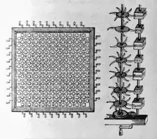

La Academia
En la tercera parte de los Viajes de Gulliver “Un viaje a Laputa, Balnibarbi, Luggnagg, Glubbdubdrib y el Japón.”, Johnatan Swift describe la extraordinaria isla flotante de Laputa y el continente de Balnibarbi, que se encuentra sometido a su dominio.
En la isla flotante vivía la clase gobernante, nobles que pasaban abstraidos en especulaciones matemáticas o musicales. Aburrido, y despreciado por los habitantes de Laputa, Gulliver decide bajar a conocer el continente de Balnibarbi, y su metrópolis, Lagado, guiado por el señor Munodi.
Este es parte del relato de esta visita, estoy conciente que la gente ya no lee textos de más de 140 caracteres, pero aún así, los invito a leer este fragmento con atención:
El señor Munodi era persona de alto rango, que había sido varios años gobernador de Lagado; pero por maquinaciones de ministros fue destituido como incapaz. Sin embargo, el rey le trataba con gran cariño, teniéndole por hombre de buena intención, aunque de entendimiento menos que escaso. [...] Díjome que si quería ir con él a su casa de campo, situada a veinte millas de distancia, y donde estaba su hacienda, habría más lugar para esta clase de conversación. Contesté a Su Excelencia que estaba por entero a sus órdenes, y, en consecuencia, partimos a la mañana siguiente.
Durante el viaje me hizo observar los diversos métodos empleados por los labradores en el cultivo de sus tierras, lo que para mí resultaba completamente inexplicable, porque, exceptuando poquísimos sitios, no podía distinguir una espiga de grano ni una brizna de hierba. Pero a las tres horas de viaje, la escena cambió totalmente; entramos en una hermosísima campiña: casas de labranza poco distanciadas entre sí y lindamente construidas; sembrados, praderas y viñedos con sus cercas en torno. No recuerdo haber visto más delicioso paraje. Su Excelencia advirtió que mi semblante se había despejado. Díjome, con un suspiro, que allí empezaba su hacienda y todo seguiría lo mismo hasta que llegáramos a su casa, y que sus conciudadanos le ridiculizaban y despreciaban por no llevar mejor sus negocios y por dar al reino tan mal ejemplo; ejemplo que, sin embargo, sólo era seguido por muy pocos, viejos, porfiados y débiles como él.
Llegamos, por fin, a la casa, que era, a la verdad, de muy noble estructura y edificada según las mejores reglas de la arquitectura antigua. Los jardines, fuentes, paseos, avenidas y arboledas estaban dispuestos con mucho conocimiento y gusto. Alabé debidamente cuanto vi, de lo que Su Excelencia no hizo el menor caso, hasta que después de cenar, y cuando no había con nosotros tercera persona, me dijo con expresión melancólica que temía tener que derribar sus casas de la ciudad y del campo para reedificarlas según la moda actual, y destruir todas sus plantaciones para hacer otras en la forma que el uso moderno exigía, y dar las mismas instrucciones a sus renteros, so pena de incurrir en censura por su orgullo, singularidad, afectación, ignorancia y capricho, y quizá de aumentar el descontento de Su Majestad. Añadió que la admiración que yo parecía sentir se acabaría, o disminuiría al menos, cuando él me hubiese informado de algunos detalles de que probablemente no habría oído hablar en la corte, porque allí la gente estaba demasiado sumida en sus especulaciones para mirar lo que pasaba aquí abajo.
Todo su discurso vino a parar en lo siguiente:
Hacía unos cuarenta años subieron a Laputa, para resolver negocios, o simplemente por diversión, ciertas personas que, después de cinco meses de permanencia, volvieron con un conocimiento muy superficial de matemáticas, pero con la cabeza llena de volátiles visiones adquiridas en aquella aérea región.
Estas personas, a su regreso, empezaron a mirar con disgusto el gobierno de todas las cosas de abajo y dieron en la ocurrencia de colocar sobre nuevo pie: artes, ciencias, idiomas y oficios.
A este fin se procuraron una patente real para erigir una academia de arbitristas en Lagado; y de tal modo se extendió la fantasía entre el pueblo, que no hay en el reino ciudad de alguna importancia que no cuente con una de esas academias. En estos colegios los profesores discurren nuevos métodos y reglas de agricultura y edificación y nuevos instrumentos y herramientas para todos los trabajos y manufacturas. Con los que ellos responden de que un hombre podrá hacer la tarea de diez, un palacio ser construido en una semana con tan duraderos materiales que subsista eternamente sin reparación, y todo fruto de la tierra llegar a madurez en la estación que nos cumpla elegir y producir cien veces más que en el presente, con otros innumerables felices ofrecimientos.
El único inconveniente consiste en que todavía no se ha llevado ninguno de estos proyectos a la perfección; y, en tanto, los campos están asolados, las casas en ruinas y las gentes sin alimentos y sin vestido.
Todo esto, en lugar de desalentarlos, los lleva con cincuenta veces más violencia a persistir en sus proyectos, igualmente empujados ya por la esperanza y la desesperación. Por lo que a él hacía referencia, no siendo hombre de ánimo emprendedor, se había dado por contento con seguir los antiguos usos, vivir en las casas que sus antecesores habían edificado y proceder como siempre procedió en todos los actos de su vida, sin innovación ninguna. Algunas otras personas de calidad y principales habían hecho lo mismo; pero se las miraba con ojos de desprecio y malevolencia, como enemigos del arte, ignorantes y perjudiciales a la república, que ponen su comodidad y pereza por encima del progreso general de su país.
Me parece a mí, que mucho de lo que se hace desde “la academia”, procede de la manera en que nos cuenta Gulliver en este pasaje.
Ese interés supericial por la tecnología, y la ciencia, que en realidad, falto de imaginación, sentido práctico, y conexión con la realidad, es lo que contamina siempre a las universidades y todo el círculo académico.
Lo peor es que eso se extiende a toda la sociedad, donde los que no han pasado por la academia se sienten ignorantes si no siguen los dictados de los doctores y académicos, que nunca han hecho nada práctico de valor en su vida.
Todo no es más que moda esteril, donde las especulaciones académicas sobre la conveniencia o no de usar software libre, o sobre esaentelequia la neutralidad tecnológica, han reemplazado el sentido común, que nos dice que lo que importa es hacer las cosas, más que discutir sobre cual es la mejor forma de hacerlas.
Yo no creo que nada bueno puede surgir de la academia, al menos tal como funciona hoy en día, porque conociendo como opera, no lo hace de forma muy diferente a La Gran Academia de Lagado:
Esta Academia no está formada por un solo edificio, sino por una serie de varias casas, a ambos lados de la calle, que, habiéndose inutilizado, fueron compradas y dedicadas a este fin. Me recibió el conserje con mucha amabilidad y fui a la Academia durante muchos días. En cada habitación había uno o más arbitristas, y creo quedarme corto calculando las habitaciones en quinientas.
El primer hombre que vi era de consumido aspecto, con manos y cara renegridas, la barba y el pelo largos, desgarrado y chamuscado por diversas partes. Traje, camisa y piel, todo era del mismo color. Llevaba ocho años estudiando un proyecto para extraer rayos de sol de los pepinos, que debían ser metidos en redomas herméticamente cerradas y selladas, para sacarlos a caldear el aire en veranos crudos e inclementes.

Me dijo que no tenía duda de que en ocho años más podría surtir los jardines del gobernador de rayos de sol a precio módico; pero se lamentaba del escaso almacén que tenía y me rogó que le diese alguna cosa, en calidad de estímulo al ingenio; tanto más, cuanto que el pasado año había sido muy malo para pepinos. Le hice un pequeño presente, pues mi huésped me había proporcionado deliberadamente algún dinero, conociendo **la práctica que tenían aquellos señores de pedir a todo el que iba a visitarlos.**
Pasamos a dar una vuelta por la otra parte de la Academia, donde, como ya he dicho, se alojan los arbitristas de estudios especulativos.
El primer profesor que vi estaba en una habitación muy grande rodeado por cuarenta alumnos. Después de cambiar saludos, como observase que yo consideraba con atención un tablero que ocupaba la mayor parte del largo y del ancho de la habitación, dijo que quizá me asombrase de verle entregado a un proyecto para hacer progresar el conocimiento especulativo por medio de operaciones prácticas y mecánicas; pero pronto comprendería el mundo su utilidad, y se alababa de que pensamiento más elevado y noble jamás había nacido en cabeza humana. Todos sabemos cuán laborioso es el método corriente para llegar a poseer artes y ciencias; pues bien: gracias a su invento, la persona más ignorante, por un precio módico y con un pequeño trabajo corporal, puede escribir libros de filosofía, poesía, política, leyes, matemáticas y teología, sin que para nada necesite el auxilio del talento ni del estudio.
Estuve en la escuela de matemáticas, donde el maestro enseñaba a los discípulos por un método que nunca hubiéramos imaginado en Europa. Se escribían la proposición y la demostración en una oblea delgada, con tinta compuesta de un colorante cefálico. El estudiante tenía que tragarse esto en ayunas y no tomar durante los tres días siguientes más que pan y agua. Cuando se digería la oblea, el colorante subía al cerebro llevando la proposición. Pero el éxito no ha respondido aún a lo que se esperaba; en parte, por algún error en la composición o en la dosis, y en parte, por la perversidad de los muchachos a quienes resultan de tal modo nauseabundas aquellas bolitas, que generalmente las disimulan en la boca y las disparan a lo alto antes de que puedan operar. Y tampoco ha podido persuadírseles hasta ahora de que practiquen la larga abstinencia que requiere la prescripción.
Los Viajes de Gulliver están disponibles en linea, en inglés (idoma original), y en español.